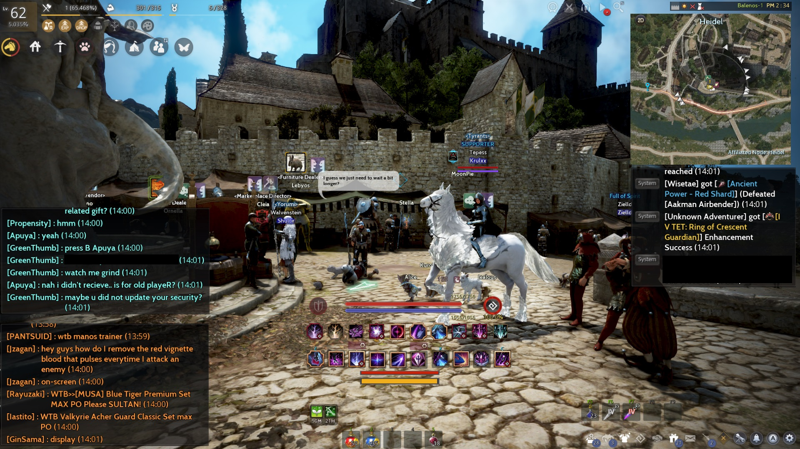
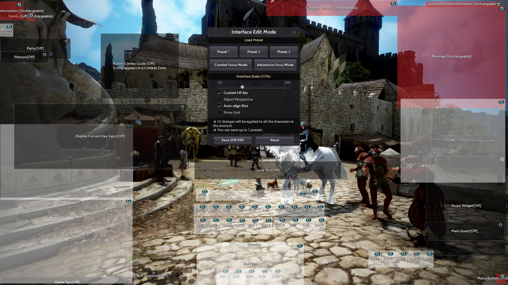
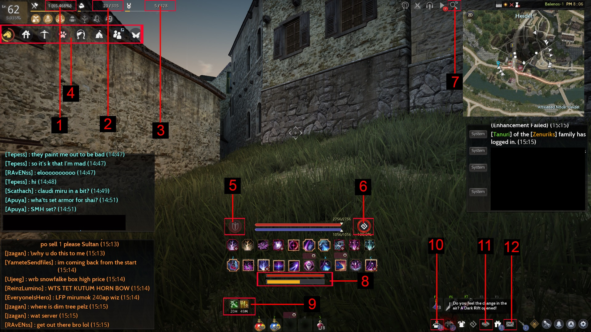
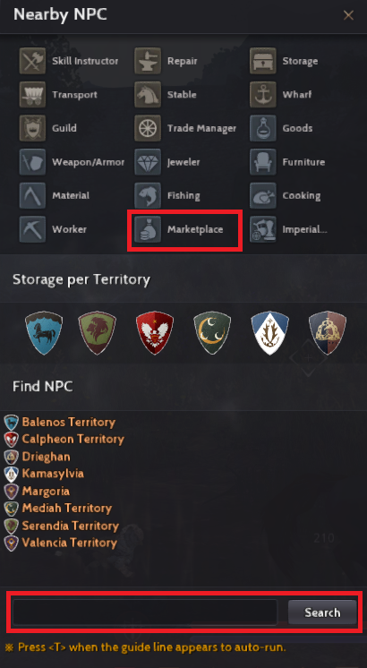

Style your UI the way you want it
This is my personal UI

I am sharing my UI for the sake of this guide. As you can see it has its own personality that reflects how I play black desert. I disabled some of the parts of my UI because if you're playing for a very long time you are bound to figure out what works for you so I customized it especially to fit my needs. If you want to copy or tweak your own version of this UI I provided a screenshot of the edit ui mode below.

It's very easy to customize it you just drag each part and place it wherever you want it, enable or disable it clicking the eye icon and you can't disable the red parts of the UI so take note of that.
Useful UI Information

Now that you have customized your own UI I will point out a few important parts that will be helpful for you.
1. Your number of skill points available and your skill points exp.
2. Your current and total energy your character has, this is very important to players who life skill and you can increase your total energy by gaining new knowledge.
3. Your current available and total contribution points. You can increase your CP by doing daily quests.
4. You can take different actions using this tray for instance if you have a horse you can call her by clicking on the horse icon, you can summon your maid, feed your pets etc...
5. This icon is for forced PVP and it is currently turned off. If you turn it on you can engage any player in combat zones. (NOTE: More on this soon.)
6. This is your Black Spirit Rage that generates overtime or when you kill mobs. You can consume 100% of it and get a 1 min buff by default the button is z and we call it Z-BUFF (you can change this button) or you can use it to make your skill stronger and it will consume a portion of your 100% (10%,25%,50%,100%).
7. This is the find NPC icon to help you locate the NPC for example click marketplace to autopath you to the nearest marketplace director. You can also type a specific name of the NPC you're looking for and it will autopath you.

8. This is your horse health (top) and stamina (bottom) and it is visible only if you're riding your horse. (NOTE: Feed your horse special carrot to restore health and stamina.)
9. This is your active buffs.
10. The black spirit safe where your daily attendance/ login rewards are stored as well as the daily silver you get form Family fame. Right click on the item you want to withdraw.
11. Your friends list. You can also access this by pressing N.
12. The mail. This is where Black desert event rewards and pearl item gifts is sent to you so if you participated in the recent events be sure to check this out for some good rewards!
Now that you have your very own UI and you can navigate your way in black desert with ease it's time to go to velia. How-to?